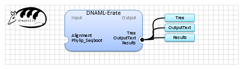

| Name | DNAML-Erate | |
| View |  | |
| Publication(s) | Probabilistic Phylogenetic Inference with Insertions and Deletions.
E. Rivas, S. R. Eddy.
PLoS Comput. Biol., 4:e1000172, 2008. | |
| Website | http://selab.janelia.org/software.html | |
| Description | Infer a Maximum Likelyhood phylogenetic tree from DNA sequences.
Copyright 1986-2008 by The University of Washington, Rivas E, Eddy SR (2008) | |
| Input (3) |
Alignment Outgroup Phylip_Seqboot | |
| Output (4) |
Tree Results MultipleTree OutputText | |
| Keywords (1) | ||
| Related (3) | DNAML (Phylip) DNAML-Erate DNAPARS (Phylip) | |
| Sample workflow | DNAmlE.properties.db |